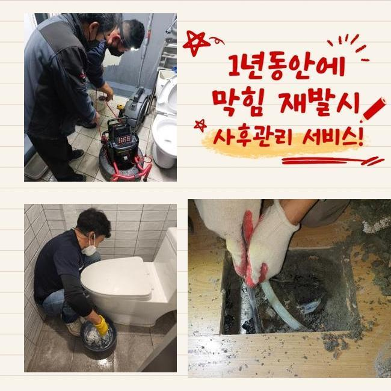
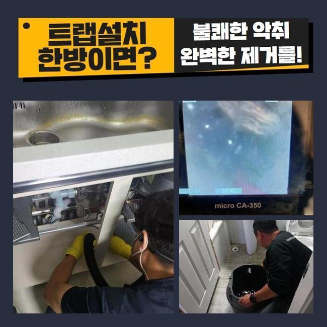
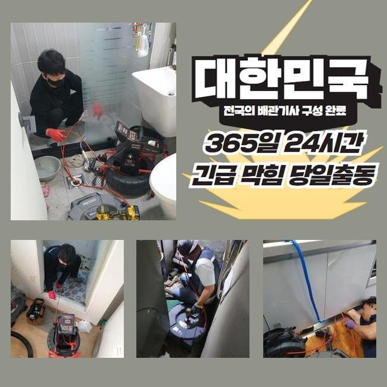
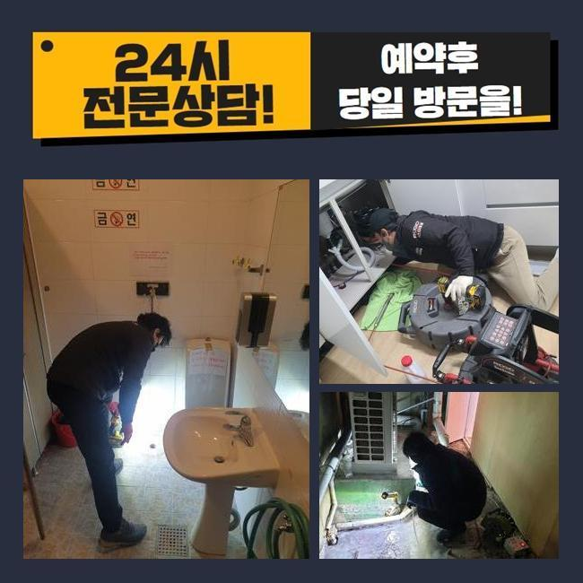
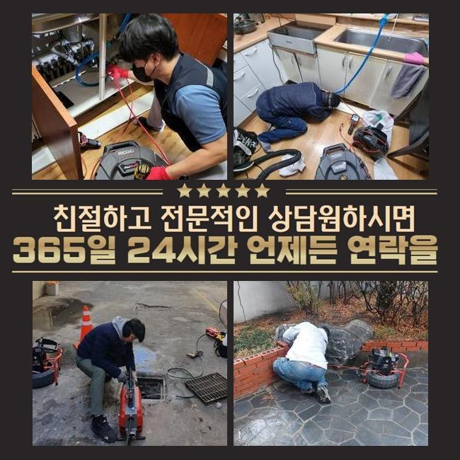

🏠 중구 필동싱크대뚫음 신당5동 배관뚫기 설비하는곳
용인 싱크대막힘 전문 시공 후기

📋 작업 개요
- 위치: 용인
- 서비스 유형: 싱크대막힘, 배관막힘, 누수수리, 역류해결, 뚫는업체, 배관청소
- 작업 일시: 2024. 12. 24. 10:50
- 업체명: 하수구수사대 (010-5615-2118)
🔍 문제 상황
중구 필동싱크대뚫음 신당5동 배관뚫기 설비하는곳
오늘 점심쯤에 배수구 막힘문제로 긴급한 방문 요청을 전달 받아서 알려주신 주소지로 달려갔습니다
고객분께서 급하게 도움을 청하신 것으로 저희 업체는 신속정확하게 전문 기기를 챙겨서 현장으로 달려갔습니다
하수설비에 이상이 발생하면 실생황에 큰 어려움이 일어나므로 의뢰를 맡은 현장을 신속정확하게 처리하는게 제일 중요한 포인트입니다
긴급하게 주소지로 향하여 먼저 고객님께서 알려주신 문제의 부분들을 살펴보았습니다
배수관 막힘사고는 세탁기기를 사용하는 다용도실에서 발생 되었는데 비정상으로 오수가 흘러가지 못했고 역류하고있는 상황이였어요
고객께서는 배수구 막힘문제를 고쳐보고자 이런 저런 방법들을 해봤지만 점점 문제가 심각해져서 세탁 자체를 못하게 되는 상황이라 힘이 드신다고 말씀하셨어요
의뢰인께서 배수라인이 역류하는 상황을 해결해보자 시중에 나와있는 간단한 약제등을 사용 해보시겠지만 막힘사고를 야기시키는 원인을 찾아내서 처리할 수 없습니다

🔎 원인 분석
💡 전문가 진단: 정밀 진단 장비를 사용하여 슬러지의 고착 여부를 판명하고 타격/세척 작업을 실시했습니다.
하수라인은 사용할수록 침전물이 쌓이면서 역류 상황등이 발생하므로 막힘이 발생한 지점을 찾아내서 수리를 진행하는게 좋습니다
일단 하수관의 내부와 건물 외부쪽 배수관 확인을 했어요
하수관 역류상황을 꼼꼼하게 확인하기 위해서라면 안쪽뿐만 아니고 외부까지 전체적으로 점검하는 것은 필수입니다
배수라인은 욕실이나 주방에서 사용하시는 하수를 외부의 배관으로 보내는 구조라서 막힘문제의 원인들이 안쪽의 배수관에 있는 것인지 바깥쪽인지 점검해야 합니다
검사를 완료한 결과로는 바깥쪽 배수관 노폐물이 가득해서 오수가 정상적으로 배출되지 않았어요
외부로 연결된 배수관의 문제들을 해결하려면 안쪽과 바깥쪽의 하수관을 한꺼번에 수리해요
내시경기를 사용해서 하수라인 내부를 꼼꼼하게 살펴봅니다
내시경기로 배수관 안에 가득한 슬러지가 배수관을 막고 있는 모습을 확인 할 수 있었습니다

🔧 작업 과정
샤프트기기를 활용해 배수관에 가득쌓인 불순물을 처리하는 과정을 시작했어요
샤프트장치는 회전하는 힘을 이용해서 노폐물을 신속하게 제거하는 기기로 하수라인에 달라붙어 있는 굳어버린 침전물을 분쇄하여 배출시키는 장비입니다
플렉스 샤프트 장비는 배수관 안에 가득한 불순물을 분쇄하여 배관 속을 깔끔하게 청소해요
배수라인의 막힘 정도가 심각한 상태라서 전문가가 오랜시간을 들여 배수관 안쪽에 쌓여있던 슬러지를 완전하게 처리했어요
머리카락과 같은 오염물질은 사용 할 때마다 하수관에 적재되며 물이 빠져나가는 것을 지연시키므로 이렇게 불순물이 배관 속에 적재되지 않도록 예방해야합니다
내부 배관에서 작업한 침전물이 배수라인을 타고 내려가지 못하게 걸러내서 따로 처리하고 하수라인을 최종적으로 점검합니다
오늘 현장에선 단단한 기름슬러지 등의 침전물이 하수관을 막아서 물이 역류하는 상태였는데 작업을 끝내고 내시경기기를 통해서 전체적인 배수라인이 깨끗해진걸 확인하고 마무리 지었습니다
마지막 마무리까지 다하고 수도꼭지를 최대치로 하고 내려보내면서 역류를 비롯한 다른 오류가 남아있는건 아닌지 통수 확인을 하였습니다
하수시설의 별다른 이상없이 아주 잘흘러가는 모습까지 확인한 후에 작업을 마무리를 할 수 있었습니다
고객께서는 원인뿐만 아니라 문제들이 처리되는 상황을 시공에 들어가면서부터 저희들과 같이 전과정을 직접 보셨어요
저희 업체는 하수시설의 여러 오류문제를 밤낮을 가리지 않고 처리해드리고 있어요
하수라인이 막히거나 역류하는 경우 실생황에 큰 어려움이 일어날 수도 있기때문에 저희 전문가는 그러한 상황을 처리 해드리기 위해서 언제나 만반의 준비를 하고있습니다
오늘과 같은 하수관 막힘문제는 불편감만 주는게 아니라 위생적인 부분에도 영향을 주므로 신속하게 처리하시는게 좋습니다


✅ 작업 완료
혹시라도 아랫층에도 피해를 주게 되었다면 우리집과 관계성이 있는 누수가 맞는지 파악해야하며 전문진에게 점검을 의뢰하여 확인하시는걸 추천합니다
저희 전문가는 최소한의 시공작업과 발 빠르게 처리속도로 고객분께서 만족하시도록 작업을 진행하겠습니다
하수설비 관련 전문진의 조언이 필요하시다면 언제라도 저희 전문진에게 문의 해주시면 친절하게 응대하겠습니다
배수관의 말썽으로 곤란을 겪고 계시다면 저희 전문 기술진에게 맡겨주시기 바랍니다


⚠️ 베란다 누수 및 방수 관리 방법
- ✅ 비가 많이 올 때 창틀 주변이나 아래층 천장에 얼룩이 생기는지 정기적으로 확인해 보세요.
- ✅ 우수관 주변 실리콘 마감이 들뜨거나 깨진 틈새가 있는지 손상 여부를 수시로 체크하세요.
- ✅ 베란다 바닥 타일의 줄눈(메지)이 소실되면 그 틈으로 물이 침투하여 누수가 유발됩니다.
- ✅ 누수 의심 증상 발견 시 방치하면 아래층 손실이 커지므로 즉시 전문가의 진단을 받으십시오.
💡 핵심 정리
- 확실한 장비 작업(내시경 점검 및 샤프트 스케일링)으로 원인을 뿌리 뽑습니다.
- 작업 후 1년 이내에 동일한 부위 재발 시 100% 무상 A/S 서비스를 보장합니다.
- 서울 · 경기 · 인천 전 지역에 24시간 언제든 긴급 출동할 수 있도록 항시 대기 중입니다.
❓ 자주 묻는 질문 (FAQ)
🚨 용인 싱크대막힘 문제로 고민이신가요?
정확한 원인 진단과 확실한 시공으로 재발 없는 해결을 약속드립니다.
24시간 긴급 출동 | 서울 · 경기 · 인천 전지역 | 1년 내 재발 시 무상 A/S